NTv3 interpretability · functional-track head
NTv3 learns one linear projection per functional track, with nothing tying RNA-seq tracks to each other or telling the model that a liver ATAC track and a liver RNA track share a tissue. It learns a shared organ code anyway — one that holds across donors and across assays. But it is faint, uneven, and does not transfer linearly.
Assay probe
0.999
Assay group is essentially perfectly decodable (chance 0.333)
Tissue, assay fixed
0.45–0.69
Tissue probes trained inside a single assay, 14–34× chance
Cross-assay Δ
z = 28
Strictest grouping, lab held fixed: z = 25
Organ code
0.404
RNA→ChIP top-1 organ match with the biosample held out, chance 0.028
The first pass defined "different modality" as assay:target, which made
ChIP-seq:H3K4me3 vs ChIP-seq:H3K27ac count as a cross-modality comparison.
635 of the ~639 distinct modality labels are ChIP-seq targets, so that
aggregate was overwhelmingly ChIP-vs-ChIP and overstated the result. Everything below
is recomputed at assay-group level, where every comparison is between
genuinely different measurement types. The headline effect drops by roughly 5× and
remains highly significant.
Confirmed from the published source, nucleotide_transformer_v3/heads.py:
class LinearHead(nnx.Module):
def __init__(self, embed_dim, num_labels, *, rngs):
self.layer_norm = nnx.LayerNorm(embed_dim, rngs=rngs)
self.head = nnx.Linear(in_features=embed_dim, out_features=num_labels, rngs=rngs)
def __call__(self, x):
return jax.nn.softplus(self.head(self.layer_norm(x)))
Track t's prediction is softplus(w_t · LN(x) + b_t), where
w_t is literally one column of a single weight matrix. No assay embedding,
no tissue factor, no shared low-rank basis. Whatever organization exists was learned from
the prediction objective alone.
The head is per-species (bigwig_head.species_heads.{i}), so
human is a standalone module — index 21, 7,362 tracks, 1,536-d in the
650M checkpoint — and it consumes the trunk embedding directly.
No model inference was needed. The analysis requires four tensors, pulled from
model.safetensors by HTTP range request using the format's header offsets
— tens of MB instead of 2.6 GB, no torch or JAX. Track identities come from
config.json; assay and biosample labels from the public ENCODE API.
This turns out to be the decision the whole result hinges on, so it is worth stating explicitly. There are three defensible granularities:
| Level | Definition | Distinct values | Problem |
|---|---|---|---|
| Modality | assay_term_name:target | ~639 | 635 are ChIP targets, so "cross-modality" mostly means comparing two histone marks |
| Assay family | assay_term_name | 5 | Treats total RNA-seq and polyA RNA-seq as different measurements |
| Assay group (used here) | assay_family, RNA assays merged | 4 | Strictest; the conservative choice |
Merging the two RNA assays is deliberate. ENCODE's RNA-seq (total RNA) and polyA plus RNA-seq measure the same thing with different library prep, and they were the single most similar pair in every analysis — AUROC 0.699, centroid top-1 0.72, the only probe transfer above 7× chance. That is what "same assay measured twice" looks like. Merging them removes the easiest comparison and reclassifies those same-tissue RNA↔polyA pairs as within-group, excluding them from the cross-group test entirely.
| Assay group | Tracks | Distinct modalities | Biosamples |
|---|---|---|---|
| ChIP-seq | 3,633 | 635 | 238 |
| RNA-seq (total + polyA) | 1,487 | 2 | 266 |
| CAGE | 1,276 | 1 | 0 |
| DNase-seq | 573 | 1 | 221 |
Only ChIP-seq subdivides. Its 635 targets are the reason the fine-grained label was misleading — the top ten alone account for about two thirds of ChIP tracks:
| ChIP-seq target | Tracks | Biosamples | Target | Tracks | Biosamples |
|---|---|---|---|---|---|
| H3K4me3 | 321 | 188 | H3K27ac | 225 | 148 |
| H3K36me3 | 266 | 160 | CTCF | 201 | 122 |
| H3K27me3 | 257 | 153 | H3K9ac | 94 | 74 |
| H3K4me1 | 255 | 151 | POLR2A | 85 | 37 |
| H3K9me3 | 249 | 147 | H2AFZ | 45 | 44 |
The remaining 605 targets are mostly transcription-factor ChIP with a handful of tracks
each (1,250 tracks total). The complete mapping is in
results/a9_modality_to_family.csv.
CAGE carries no tissue labels. FANTOM5's sample-annotation file returns 404, so all 1,276 CAGE tracks have an assay but no biosample and are excluded from every tissue analysis. They appear only in the geometry figures.
The linear sits directly on a LayerNorm, whose output n(x) is
exactly zero-mean across embed_dim. Writing
v_t := γ ⊙ w_t:
The all-ones component of v_t is a gauge freedom — it
provably cannot change any prediction, and the induced shift in the constant term is
absorbed by the free bias. The identifiable object is ṽ_t = center(γ ⊙ w_t),
and cos(ṽ_i, ṽ_j) is the Pearson correlation of the γ-scaled weights.
So mean-centering is mandatory rather than stylistic; the γ rescaling matters because
LayerNorm reweights every coordinate before the dot product; and ‖ṽ_t‖, the
track's effective gain, is reported separately rather than allowed to contaminate a
cosine.
Checked numerically rather than assumed: relative prediction drift under the gauge shift is 3.4 × 10⁻¹². But the correction is empirically modest — raw and corrected similarity matrices correlate at r = 0.969, so it overturns nothing here. Right to do; not load-bearing.
PC1 explains only 9.9% of variance and the top 50 components reach 51.6%, so modality is not a single component — which is also why removing it later is done by subtracting group centroids rather than deleting a PC.
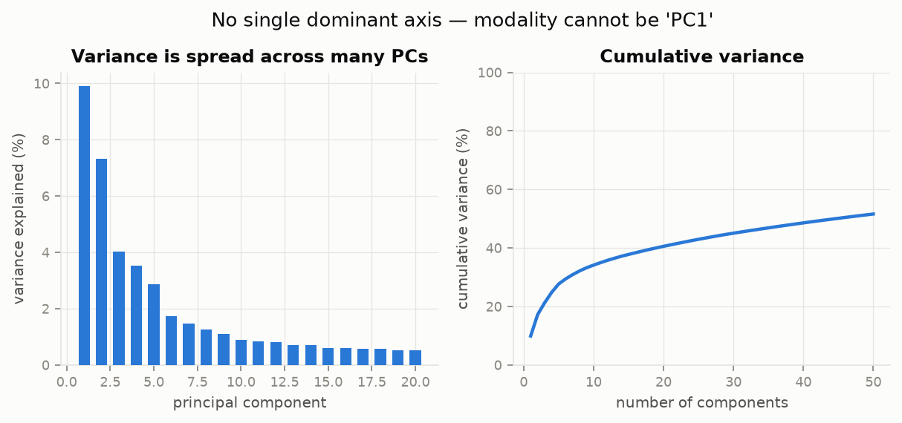
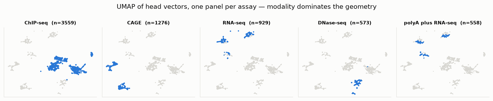
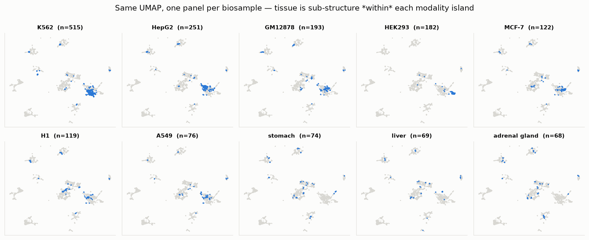
The obvious worry about any pooled tissue probe is that it decodes assay and reads tissue off it. That is measurable: train a classifier that sees only the assay group label and nothing else. It reaches 0.019 against a chance rate of 0.015. There is no shortcut available to take.
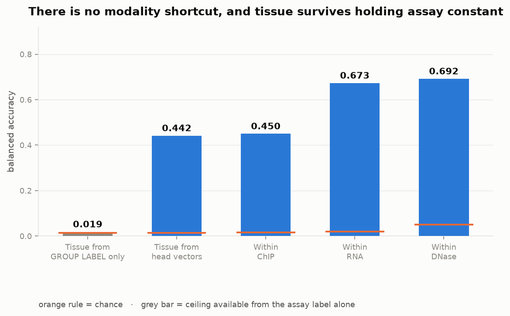
The same cosine matrix under two orderings. Reordering is a visual aid, not a test — the matrix is unchanged by permuting its rows, which is why the formal test permutes labels.
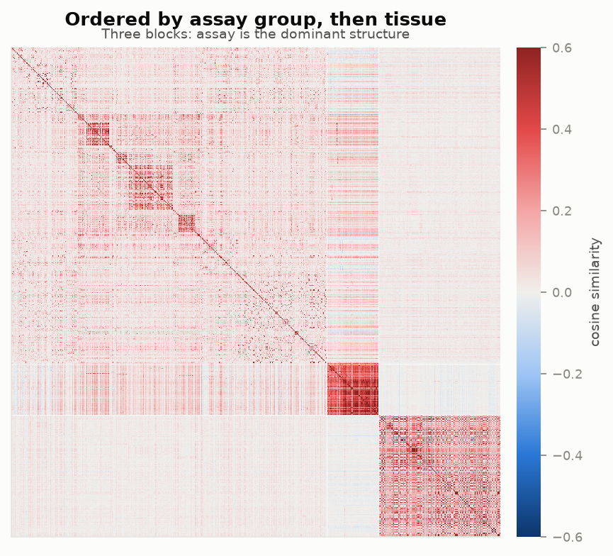
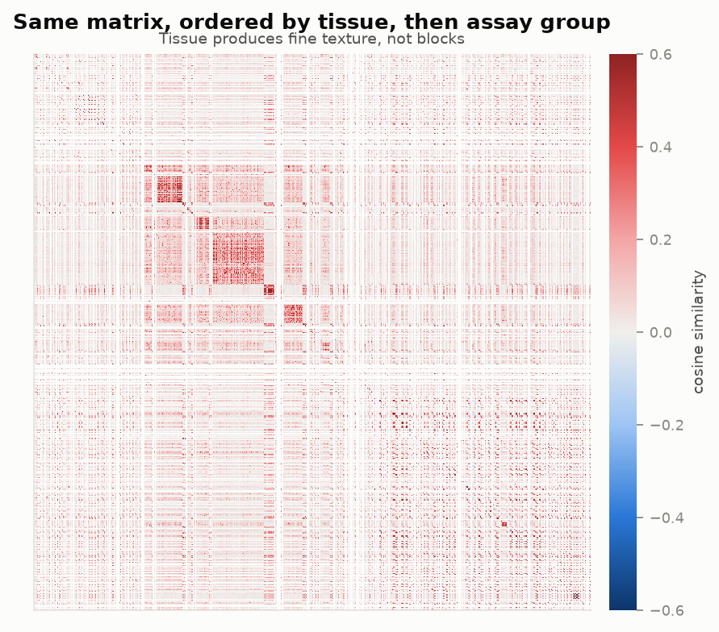
Removing assay properly — subtracting each group's centroid rather than deleting PC1 — makes the tissue effect stronger (at fine-modality level, Δ rose from +0.066 to +0.083 and AUROC from 0.613 to 0.635), consistent with tissue signal being partly masked by the dominant axis.
The statistic holds the ordered assay-group pair fixed:
Restricting to cross-group comparisons also eliminates duplicate inflation structurally:
the _M/_P strand splits of one experiment, and replicate runs
of one assay, always share a group, so they can never land inside a within-tissue block.
The null permutes tissue labels within group strata, preserving assay
composition and destroying only tissue alignment.
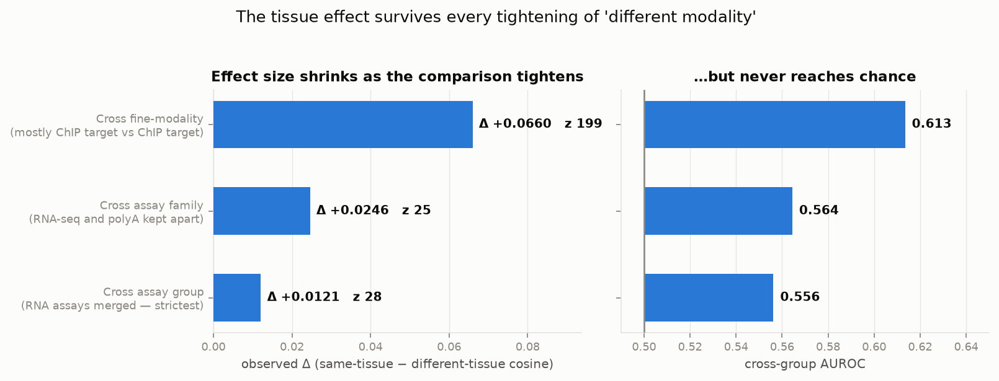
| Checkpoint | Biosamples | Δ | z (within group) | z (group × lab) | AUROC |
|---|---|---|---|---|---|
| 650M | all | +0.0121 | 28.2 | 24.9 | 0.556 |
| 650M | tissues only | +0.0081 | 16.7 | 15.3 | 0.545 |
| 100M | all | +0.0116 | 20.6 | 23.2 | 0.541 |
| 100M | tissues only | +0.0085 | 15.9 | 13.5 | 0.535 |
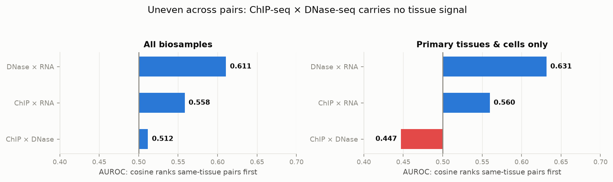
A tissue classifier trained on ChIP-seq barely beats chance on RNA-seq. That has two possible causes: there is no shared cross-assay tissue code, or the probe is simply undertrained. These have to be separated before either is believed.
Fit the same classifier on the same tissue classes in the same feature space, and evaluate two ways — held out within the training assay, and transferred to the other assay. Only the split changes.
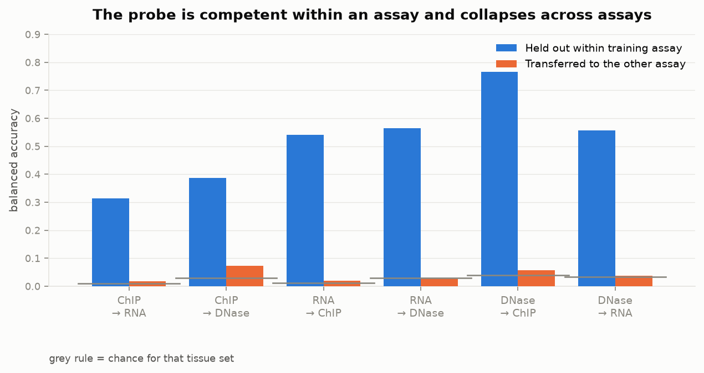
A linear probe trained on one assay learns a boundary tuned to that assay's own variance structure, so it is defeated by distribution shift even when a shared code exists. The test that avoids this trains nothing at all: take each tissue's mean vector within assay A and within assay B, centre each cloud, and ask whether tissue t's A-centroid is nearest to its own B-centroid among all candidates.
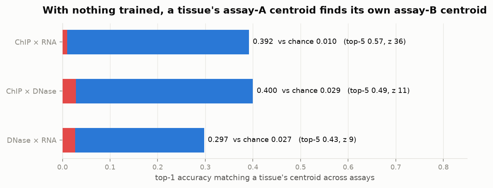
These two results are not in conflict. A shared tissue direction exists and is easy to find when you look for it in a shift-invariant way, but it is not expressed in a common linear frame that a classifier can carry from one assay to another. That is exactly the signature you would expect from a model given no tissue × assay factorization: it has learned tissue, separately, inside each assay's own coordinate system.
"Same tissue" so far means the same ENCODE biosample term, and those terms split hairs:
liver and right lobe of liver are different terms, as are three
aortas, seven CD4/CD8 T-cell subsets, and seven lung sites. That raises a sharper
question than the confound one — does the head encode organ biology that
generalizes across donors and sites, or only the identity of a particular sample?
Regrouping by ENCODE organ_slims, which collapses exactly those cases, gave
a surprise: the cross-assay AUROC went down, from 0.556 to 0.520 (and 0.529 to
0.511 with the blood bucket dropped). Splitting every cross-assay pair three ways showed
why — same-organ-but-different-biosample pairs are not more similar than
different-organ pairs. On that evidence there is no organ-level generalization at all.
Per-track pairwise cosine is a very weak instrument here. Even the same-biosample cross-assay effect only reaches AUROC 0.50–0.53 pairwise, so a null at the organ level says little. Averaging tracks into centroids first — the same move that made the biosample-level signal obvious — changes the answer completely.
The properly powered test is leave-biosample-out organ matching: build one centroid per (organ, biosample, assay), then for each ChIP centroid rank the RNA centroids from different biosamples and ask whether the nearest comes from the same organ. A hit cannot come from sample identity, because the querying sample is excluded from the candidate pool. Chance is computed per query as the fraction of eligible targets sharing its organ, so organ frequency is accounted for.
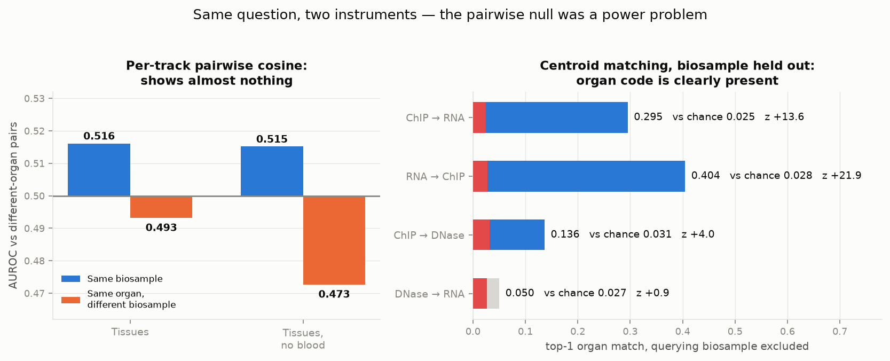
| Direction (tissues only, no blood bucket) | top-1 | chance | z |
|---|---|---|---|
| RNA-seq → ChIP-seq | 0.404 | 0.028 | +21.9 |
| ChIP-seq → RNA-seq | 0.295 | 0.025 | +13.6 |
| ChIP-seq → DNase-seq | 0.136 | 0.031 | +4.0 |
| DNase-seq → RNA-seq | 0.050 | 0.027 | +0.9 (n.s.) |
So the head does carry a donor- and site-independent organ code, shared across assays — concentrated in the ChIP ↔ RNA relationship, weak for ChIP ↔ DNase, and absent for DNase ↔ RNA. The reason it is easy to miss is that its per-track signal-to-noise is low: it takes averaging roughly a dozen tracks before it separates from noise.
At fine-modality level, lab identity looked like a serious rival explanation: cosine predicted same-lab (AUROC 0.618) better than same-tissue (0.566). At assay-group level that largely disappears — the strong lab effect was a within-ChIP phenomenon.
| Cosine predicts… (cross-group pairs only) | AUROC |
|---|---|
| Same tissue | 0.527 |
| Same lab | 0.523 |
| Same tissue, cross-lab pairs only (72,777 positives) | 0.531 |
Restricting to pairs from different labs does not weaken the tissue signal at all. Permuting tissue within group × lab strata leaves z = 24.9. Batch is not the explanation at this level.
The earlier report highlighted "73.8% of cross-modality neighbours share tissue, 43× chance". At group level the same statistic is 0.750 (31× chance) — but it rests on only 128 neighbour pairs, because genuinely cross-assay tracks are rarely in each other's top 10. It is far too thinly supported to headline, and it is retired here in favour of the centroid-matching result, which uses every tissue.
The architectural complaint is correct as stated: there is no inductive bias coupling tracks. The question was whether that absence shows up in the learned weights.
Assay dominates the geometry (probe 0.999, near-disjoint UMAP islands). Tissue is genuinely there and is not a modality artifact: the assay label alone buys nothing (0.019 vs 0.015 chance), and tissue probes trained with assay held constant reach 0.45–0.69, i.e. 14–34× chance.
And it is organ biology, not sample identity. With the querying biosample excluded from the candidate pool, a tissue's centroid in one assay finds a different donor's centroid of the same organ in another assay far above chance (top-1 0.404 vs 0.028, z = 22). That is the strongest positive evidence here, and it cannot be explained by batch, by sample identity, or by assay.
The qualifications are real, though. Per-track the effect is tiny — cross-assay pairwise AUROC 0.50–0.556, which is why two reasonable-looking analyses in this report initially pointed the wrong way. It is uneven: strong for ChIP ↔ RNA, weak for ChIP ↔ DNase, absent for DNase ↔ RNA. And it does not sit in a common linear frame — a tissue classifier retains only 7.5% of its accuracy when moved between assays.
So NTv3 has not learned a clean, transferable tissue × assay factorization. It has learned a per-assay tissue code, with enough genuine organ-level agreement between those codes to be recovered by averaging, but not enough for anything to transfer directly. That is arguably the strongest version of the original argument: the shared biological context is there but latent — exactly the situation where supplying the factorization explicitly should help, rather than being redundant.
kai* tracks are of unknown provenance and unresolved throughout.